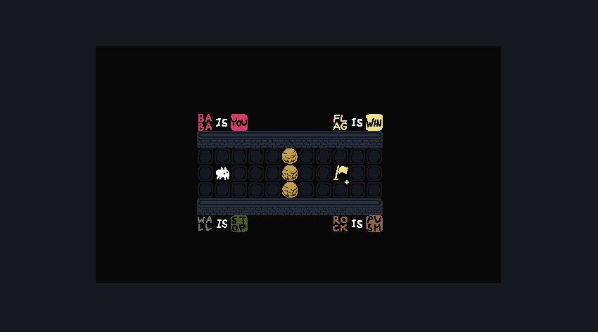
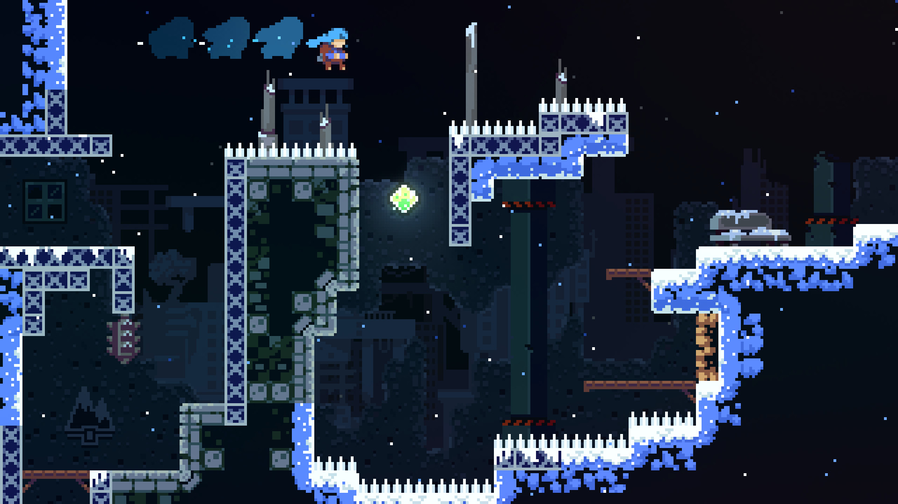
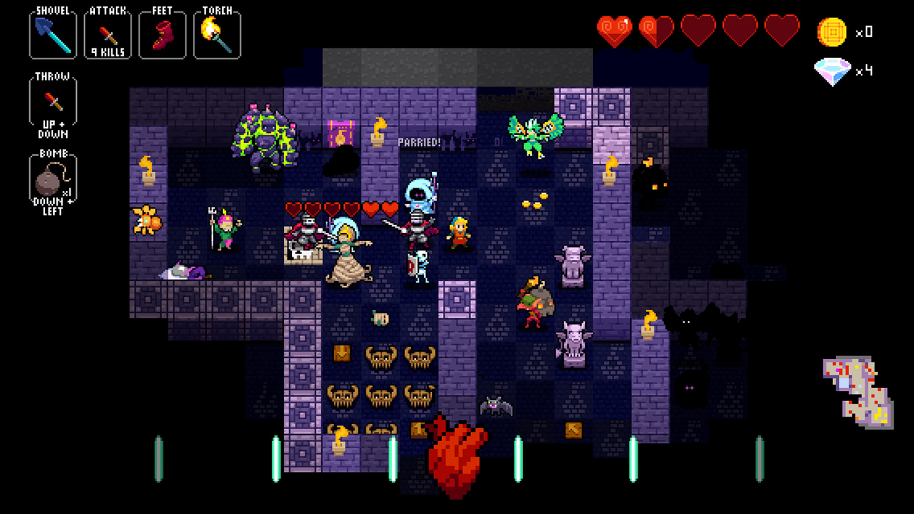
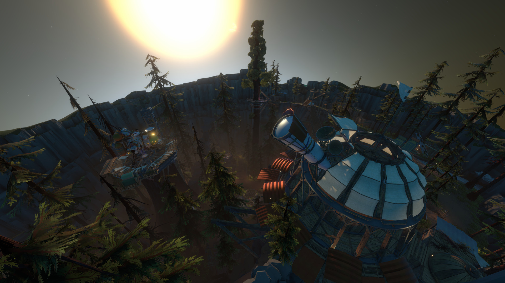
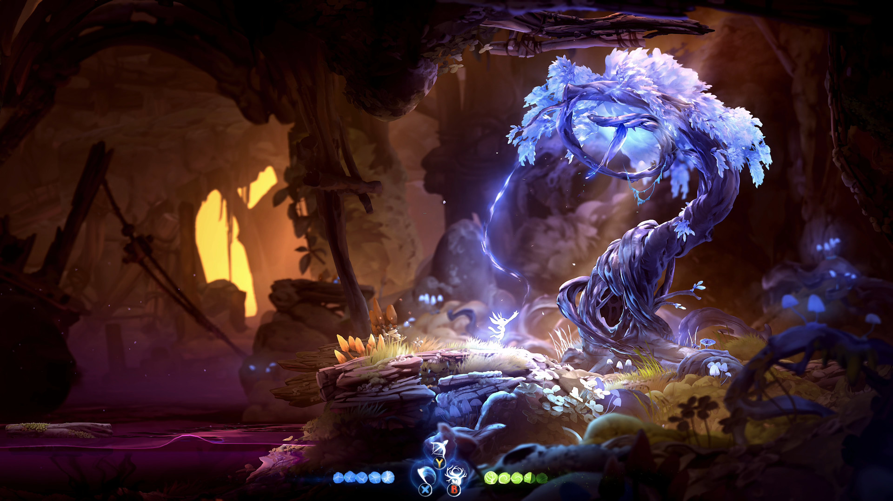
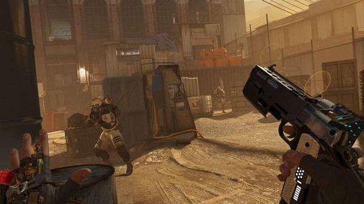
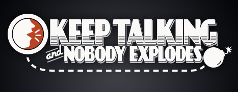
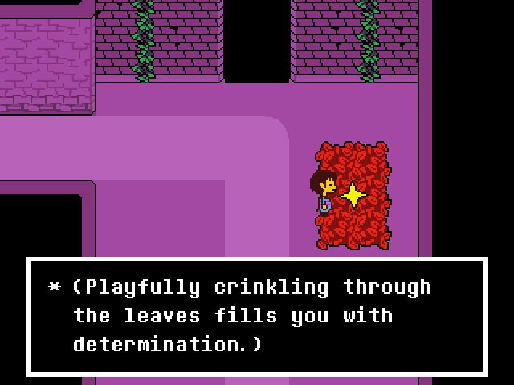
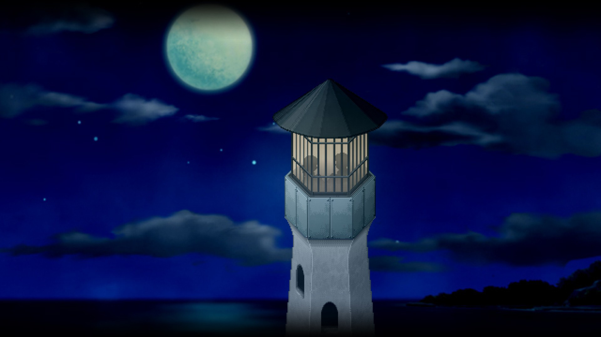
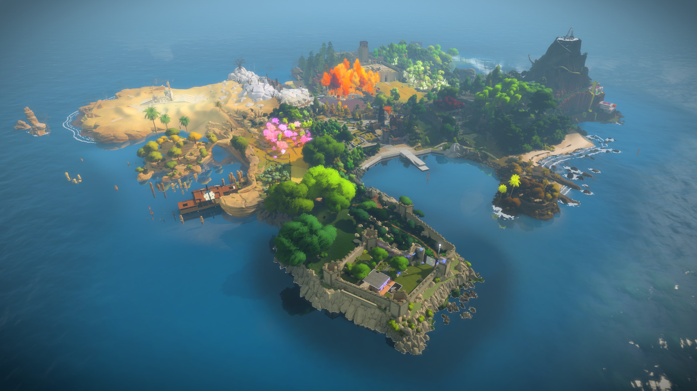

10점

장르 : 퍼즐, 하드코어
소코반 형식 움직임을 통해, 문장을 만들거나 파괴하며 퍼즐을 풀어 나가는 게임입니다.
문장이 오브젝트의 속성을 정의하므로 다양한 인터랙션이 가능해 매우 어렵습니다.
가격 : 15,500 (할인률 20~30%)
도전과제 100% 난이도 : 매우 어려움. 퍼즐에 대한 깊은 난이도 요구
DLC 없으나 팬 메이드 맵이 존재하며, 본작의 난이도보다 훨씬 어려움.

장르 : 플랫포머, 하드코어
주인공 Madline이 산을 등반하는 이야기를 다룹니다.
독자적인 물리엔진을 이용해 액션감이 매우 좋고, 맵 디자인이 잘 되어 있습니다.
컨트롤러를 지원하나 키보드를 추천드립니다.
가격 : 21,000
도전과제 100% 난이도 : 한 도전과제가 꽤 어려움
DLC는 없으나 팬 메이드 맵이 존재하며, 훨씬 어려움 (보통 권장하지 않습니다)
OST가 매우 좋음.

장르 : 로그라이크, 리듬, 하드코어
주의 : 로그라이크 장르에 익숙하지 않거나, 모르면 죽어라 식 패턴을 싫어한다면 추천하지 않습니다.
주의 : 기본 한국어 변역 퀄리티가 낮아, 팬메이드 번역 패치를 하는것이 좋습니다.
정석 로그라이크에, 턴당 생각할 시간을 리듬 요소로 제한시킨 새로운 장르입니다.
로그라이크 특성상 리플레이성이 뛰어나고, 한 런타임이 비교적 짧아 즐기기 좋습니다.
컨트롤러를 지원하나 키보드를 추천드립니다.
가격 : 16,000 (할인률 70%, 매우 자주 함 )
Amplified DLC : 7,500 (본편과 합본팩이 있음)
Synchrony DLC : 7,500
도전과제 100% 난이도 : 스팀판 기준 100% 달성자 전세계 22명 (2022-12-15)
DLC : Amplified, Synchrony DLC 모두 구입 권장합니다.
OST가 매우 좋음.

장르 : 타임루프, 오픈월드, 스토리
주의 : 기본 한국어 변역 퀄리티가 낮아, 팬메이드 번역 패치를 하는것이 좋습니다.
타임루프라는 소재를 최대한으로 살린 작품입니다.
우주비행사인 주인공은 타임루프에 갇혀 정보를 모으고, 정보를 모아 태양계의 비밀과 과거를 밝혀내야 합니다.
생동감 있는 경험을 위해 컨트롤러 사용을 추천드립니다.
가격 : 26,000 (할인률 20%, 자주함)
EotE DLC : 16,000 (합본팩 구입 추천)
도전과제 100% 난이도 : 어려움. 노력과 약간의 공략을 통해 가능.
DLC 구입을 추천드리나, 본편 첫 클리어 전까지 DLC를 끈 상태로 진행하는 것을 추천드립니다.

장르 : 매트로배니아, 스토리
숲의 정령 Ori의 모험을 나타내는, 통칭 Ori 시리즈라 불리는 두 작품입니다.
월페이퍼로 쓰고 싶을 정도로 매우 아름다운 그래픽을 자랑합니다.
생동감 있는 경험을 위해 컨트롤러 사용을 추천드립니다.
Blind Forest DE edition : 4,900
Will of the Wisps : 29,900 (할인률 50%)
도전과제 100% 난이도 : Blind forest 는 한 도전과제가 특출나게 어렵고, Will of the Wisps 는 어렵지만 누구나 충분히 가능함.
DLC 없음.
OST가 진짜 정말 매우 미칠정도로 좋습니다.

장르 : 스토리, 호러, VR
주의 : 이 게임은 VR이 있어야만 실행 가능한 게임입니다.
주의 : 스토리 이해를 위해 Half-Life 2, Half-Life 2: Episode 1, Half-Life 2: Episode 2 선행 플레이를 추천드립니다.
Half-Life 시리즈의 최신작입니다. VR 게임의 혁신이라 불릴 정도로 자유도가 높고 컨트롤이 부드럽습니다.
VR이라는 특성을 잘 살려 공포 연출과 사격 시스템이 뛰어납니다. 이거 하면 다른 VR 게임 못합니다.
가격 : 63,000 (할인률 50%, 가끔)
도전과제 100% 난이도 : 어려움
DLC 없음.

장르 : 협력 및 소통
주의 : 이 게임은 최소 2명 이상 필요합니다. 친구가 없다면 게임조차 못합니다.
한명은 게임을, 한명은 매뉴얼을 읽으며 소통을 해야합니다.
게임측은 폭탄의 구조를 설명하고, 매뉴얼측은 그 구조를 매뉴얼에서 찾아 해제 방법을 설명합니다.
소통 특성상 많은 소음이 발생하므로 방음에 주의.
협력 게임의 특성을 120% 살린 게임으로, 유일한 단점은 한번 하면 기억에 남아 다시 플레이하기 힘듭니다.
이러한 단점은 창작마당을 통해 새로운 모듈을 받는 것으로 해결 가능합니다.
가격 : 16,000 (할인률 ?, 자주함)
도전과제 없음, DLC 없음. 친구 없음...

장르 : 스토리, 선택의 중요성
스토리의 어느 일부를 따와도 스포일러가 되어 스토리는 적지 않으나, 매우 감동적이고 깊은 내용을 다룹니다.
OST도 매우 좋고, 특징적인 등장인물 디자인과 개그, 전투, 스토리라인의 황금비율을 잘 유지합니다.
개인적으로 저는 이거 하고 펑펑 울었습니다.
가격 : 10,500 (할인률 ?, 가끔)
도전과제 없음.

장르 : 스토리, 쯔꾸르, 비주얼노벨
죽기 전, 행복한 기억을 만들어 떠날 수 있게 해주는 기술을 통해, 한 남자의 꿈을 이뤄주는 내용입니다.
스토리의 깔끔함, 감동적인 내용 만으로 만점을 줄 수 있을 정도입니다.
개인적으로 저는 이거 하고 펑펑 울었습니다. OST만 다시 들어도 울컥할 정도
가격 : 10,500 (할인률 ?, 가끔)
도전과제 100% 난이도 : 게임 클리어시 자동으로 습득
OST만으로 기억을 불러올 수 있다는 것을 알 수 있었습니다.

장르 : 퍼즐, 오픈월드
주의 : 3D 멀미가 심한 경우 추천하지 않음. (3D 멀미가 없던 사람도 자주 어지러움을 느낄 정도)
퍼즐이 가득한 한 섬에서 퍼즐을 풀어나가야 합니다.
퍼즐의 규칙이 하나도 없는 상태에서 추론을 통해 규칙을 풀어나가야 합니다.
직관적으로 보이면서도 오래 생각 해야하고, 볼륨이 매우 거대합니다.
가격 : 43,000 (할인률 ?, 거의 안함)
도전과제 100% 난이도 : 조금 어려움.